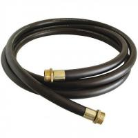
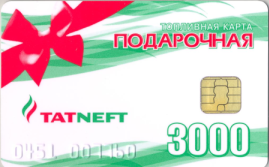

Ответы Mail.ru: подарочные карты на бензин
 Mail.ru Почта Мой Мир Одноклассники Игры Знакомства Новости Поиск Смотри Combo Все проекты Все проекты выход Регистрация Вход Категории Все вопросы проекта Компьютеры, Интернет Темы для взрослых Авто, Мото Красота и Здоровье Товары и Услуги Бизнес, Финансы Наука, Техника, Языки Философия, Непознанное Города и Страны Образование Фотография, Видеосъемка Гороскопы, Магия, Гадания Общество, Политика, СМИ Юридическая консультация Досуг, Развлечения Путешествия, Туризм Юмор Еда, Кулинария Работа, Карьера О проектах Mail.ru Животные, Растения Семья, Дом, Дети Другое Знакомства, Любовь, Отношения Спорт Золотой фонд Искусство и Культура Стиль, Мода, Звезды Полный список Спросить Лидеры Ответы Mail.ru Авто, Мото Автоспорт Автострахование Выбор автомобиля, мотоцикла ГИБДД, Обучение, Права ПДД, Вождение Оформление авто-мото сделок Сервис, Обслуживание, Тюнинг Прочие Авто-темы Вопросы - лидеры. Автомобиль, страховка автомобиля без стажа, цена. 1 ставка Лидеры категории Лена-пена Искусственный Интеллект MiF Искусственный Интеллект Gentleman Искусственный Интеллект •••
подарочные карты на бензин
Viktoriya Знаток (382), закрыт 6 лет назад Подскажите пож-та, существует ли такое - подарочные карты на бензин? Если да, то на каких АЗС можно приобрести?Спасибо! Лучший ответ Великий Лесли Гений (52084) 8 лет назад Это пластиковая карта-поздравление на определенную сумму, которую принимают к оплате наравне с деньгами на любой АЗС «МТК» . По карте можно совершить неограниченное число заправок до полного расходования номинала. Варианты подарочных карт: 3000 руб. , 5000 руб. , 10 000 руб. Стоимость карт, соответствует номиналу. По всем вопросам обращаться по телефону: 755-68-40, 258-33-63.
На сегодняшний день безналичный способ оплаты бензина делается все чаще, этот способ оплаты настолько популярен, что стали выпускаться пластиковые карты на оплату бензина. Крупные нефтеперерабатывающие компании предлагают особенные карты на топливо. Даже существует карта на бензин от известных компаний Shell, Neste, Фаэтон, ПТК, Лукойл. На таких картах существует чип, на котором хранится информация об остатках топливного лимита по карте. Также на карте существует и магнитная полоса, по которой можно получать скидки на бензин в размере 3%, еще она позволяет получать скидки на дополнительный сервис в размере 10%. Такие карты действуют почти также как банковские карты подарочные.
Подарочная карта на бензин – это пластиковая смарт-карта-поздравление, она бывает на определенную сумму ею можно оплачивать топливо на личный автотранспорт. Пользоваться такой подарочной картой можно, пока на ней не кончиться лимит. Такие карты бывают разных номиналов от 3 тысяч рублей до 10 тысяч рублей, бывают и большим номиналом, но это уже делается на заказ клиента. Также такие подарочные карты выпускают многие нефтеперерабатывающие предприятиями, такими как Газпромнефть, Роснефть, ЛУКОЙЛ и еще другие, они также выпускают и ЛУКОЙЛ бонусная карта накопительная.
Воспользоваться такой картой на бензин можно, когда будете заправляться, надо просто предъявить карту оператору АЗС или АЗК сказать нужный объем заправки и сообщить ПИН-код карты. Карта будет действительна, пока на ней будут оставаться деньги. Обналичить подарочные карты на денежные средства нельзя. Их можно только использовать на топливо и на сервисные услуги.
Подарочные карты на бензин – это хороший подарок водителю, у которого есть личный автотранспорт. Пользуясь такой картой, оператор снимает с нее средства, точно также как и с кредитной карты, на карте фиксируется количество литров топлива, которое вам было залито, пользоваться такой картой можно пока на ней остаются средства. Существуют несколько тарифов, на которые есть свои скидки, это также зависит от потребляемого топлива в месяц. Владельцы карт имеют лучшие предложения на бензин по цене, а также они могут сами контролировать денежные средства на карте, а также качество топлива. При каждом заправки машины такой картой водитель получает чек. Остальные ответы der Herr Мыслитель (8971) 8 лет назад Ты лучше ему канистру 20л. 95-ого подари! Зацелует))) Денис Калиновский Мастер (2283) 8 лет назад видел для москвы акции к примеру купи купон за 500р заправь 100литров! ! "Групон кажись" но сам не пробовал не знаю на сколь правда!! лёша виноградов Ученик (110) 8 лет назад Ты лучше ему канистру 20л. 95-ого подари! Зацелует))) Саша Оракул (54538) 8 лет назад первый раз о таком слышу Похожие вопросы Также спрашивают Мобильная версия · Помощь · Отправить отзыв Mail.ru О компании Реклама Вакансии
